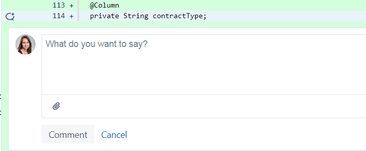

Heal the code
make it a better place
POWER OF CODE REVIEW
Zuzanna Pacholczyk

Thriller
Just good friends
This is it
“In software development, peer review is a type of software review in which a work product (document, code, or other) is examined by its author and one or more colleagues, in order to evaluate its technical content and quality. ”
— Wikipedia
This is it
“ The purpose of a peer review is to provide a disciplined engineering practice for detecting and correcting defects in software artifacts, and preventing their leakage into field operations.”
— Wikipedia
Code never felt so good
- Knowledge sharing for both sides - win - win
- Every teammate is involved
- Getting familiar with different software parts
- Regular work on technical debt
- Constant improvement
- Setting and sharing standards
Somebody's watching me
Black or white
Bad
Problem: asking judgmental questions
Why did you...?
Solution:
Replace 'you' with 'we' Can we rename this variable?
Remove subject from the sentence This variable should be renamed
Problem: sharing opinion as fact
This should be red/I would prefer having this bold
Solution:
Provide some context behind the recommendation
Problem: asking for solving not your issue
While you are at it, there is also...
Solution:
Be careful. Consider priority and size of the additional change, not block the pull request.
Problem: reviewer would do it differently
Please change logic, use different collection type, split logic, write it from other point of view...
Solution:
Is your solution better? Is the reviewed solution readable, understandable and follows our standards?
Problem: being unpolite
stupid
emoticons:
Solution:
Keep it real - don't use hyperbole.
They don't care about us
Tip: clear status
reply to all comments
done/ok
Tip: write specific remark once
Solution:
Please add javadoc in places where it's missing
Instead of: please add javadoc, please add javadoc, please add javadoc...
Tip: automate
let computers do the static analysis
Tip: keep the flow
start review immediatelly
split review into small partss
Tip: build dialog
ask questions, give recommendations
Tip: appreciate good code
show that you care
Tip: be involved
understand the solution: start high level, then check details
know the author, suggest pair programming
Tip: talk offline
“The kinds of problems that take hours and tons of comments
can usually be resolved in a few minutes of productive talk.”
— Tidy Java
You are not alone
- Checklist
- everybody creates
- standard
- smooth start
The way you make me feel
Give in to me
Heal the code
Make it a better place
For you and for me
And for all your project mates
Sources
Unlearning toxic behaviors in a code review cultureHow to Do Code Reviews Like a Human (Part One)
How to Do Code Reviews Like a Human (Part Two)
A guide for reviewing code and having your code reviewed
Software peer review
OSEE/Software Development Process/Peer Review Checklist
Credits
https://www.flaticon.com/authors/twitterhttps://www.skillshare.com/projects/Moonwalk/30883?studentRef=3414083
https://image.slidesharecdn.com/webexpo-160923210924/95/how-to-successfully-grow-a-code- review-culture-6-638.jpg?cb=1476167539
https://i.redd.it/uwx81sb64uk11.jpg
https://cdn-images-1.medium.com/max/1200/1*ekS113Iv0S6v5NZGRd_hoQ.jpeg
http://mindbowser.com/wp-content/uploads/2016/07/Code-Review-2.jpg
https://cdn-images-1.medium.com/max/1200/1*-nhSONLZxx0wcOsr20KULw.png